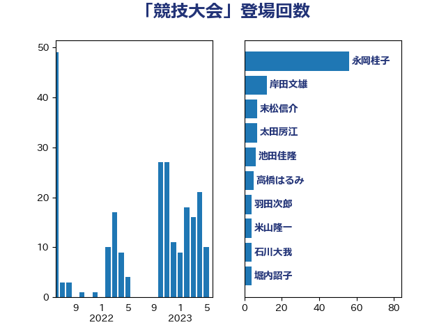

単語「競技大会」

| 永岡桂子 | 自由民主党 | 56 回 |
| 岸田文雄 | 自由民主党 | 12 回 |
| 末松信介 | 自由民主党 | 7 回 |
| 太田房江 | 自由民主党 | 7 回 |
| 池田佳隆 | 自由民主党 | 6 回 |
| 高橋はるみ | 自由民主党 | 5 回 |
| 羽田次郎 | 立憲民主党 | 4 回 |
| 米山隆一 | 立憲民主党 | 4 回 |
| 石川大我 | 立憲民主党 | 4 回 |
| 堀内詔子 | 自由民主党 | 4 回 |
| 井出庸生 | 自由民主党 | 4 回 |
| 荒井優 | 立憲民主党 | 3 回 |
| 緒方林太郎 | 無所属 | 3 回 |
| 石井拓 | 自由民主党 | 3 回 |
| 牧義夫 | 立憲民主党 | 3 回 |
| 舩後靖彦 | れいわ新選組 | 2 回 |
| 義家弘介 | 自由民主党 | 2 回 |
| 柴田巧 | 日本維新の会 | 2 回 |
| 松野博一 | 自由民主党 | 2 回 |
| 山東昭子 | 自由民主党 | 2 回 |
| 宮本岳志 | 日本共産党 | 2 回 |
| 吉良よし子 | 日本共産党 | 2 回 |
| 齋藤健 | 自由民主党 | 1 回 |
| 鈴木俊一 | 自由民主党 | 1 回 |
| 赤池誠章 | 自由民主党 | 1 回 |
| 西村智奈美 | 立憲民主党 | 1 回 |
| 石原正敬 | 自由民主党 | 1 回 |
| 田村まみ | 国民民主党 | 1 回 |
| 横山信一 | 公明党 | 1 回 |
| 森山浩行 | 立憲民主党 | 1 回 |
| 打越さく良 | 立憲民主党 | 1 回 |
| 山岡達丸 | 立憲民主党 | 1 回 |
| 小倉將信 | 自由民主党 | 1 回 |
| 塩川鉄也 | 日本共産党 | 1 回 |
| 古川禎久 | 自由民主党 | 1 回 |
| 中山展宏 | 自由民主党 | 1 回 |
| 三谷英弘 | 自由民主党 | 1 回 |
| 三浦靖 | 自由民主党 | 1 回 |